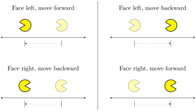
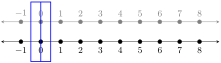
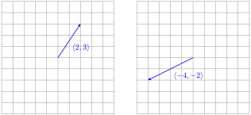
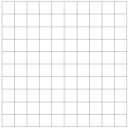
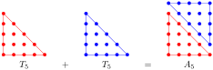

Represent numbers as movement along the number line.
Interpret addition and subtraction of numbers as movements along the number line.
Understand the equivalence of different types of movements.
In the previous sections, we have discussed the idea of both numbers and arithmetic being represented by movement. We’re going to formalize this idea a bit more in this section.
We will begin by thinking about numbers as arrows that indicate movement. When we were looking at integer chips, we talked about taking a certain number of steps to the left or to the right. It is actually more useful to think about this as taking a certain number of steps forward or backward. Imagine that you are standing on the number line facing to the right:
Every number represents movement. Positive numbers represent forward steps, negative numbers represent backwards steps, and zero represents taking no steps. It is important to focus on the idea that this is an instruction about movement, not location. This means that 3 means 3 steps forward no matter where you are on the number line.
Similarly, means steps backwards no matter where you are on the number line.
It is very important that the orientation remain consistent. The default direction is to face to the right, so that the default for "forward" is to the right. From this idea, we can actually reduce the entire picture to just arrows (though we’ll stick with including the figure for emphasis).
Activity29.1.Adding Numbers on a Number Line.
Addition of two numbers means to perform two sets of movements in sequence. So \(3 + 4\) means to move 3 steps forward followed by 4 steps forward. The end result is the same as 7 steps forward, so \(3 + 4 = 7\text{.}\)
Try it!
Draw a movement diagram to represent \(2 + 4\) and compute the result.
Solution.
Activity29.2.Subtraction on a Number Line.
Subtraction is the same idea, except that we face to the left before moving for subtracted values. This fits in with the concept of subtraction undoing addition, since if you take a certain number of steps forward then turn around and do it again, you will end up right back where you started.
When reading a calculation, you want to be able to read it as a series of steps from left to right.
In the diagram, it is important to draw the figure facing the correct direction to really emphasize the point.
Try it!
Draw a movement diagram to represent \(2 - 5\) and compute the result.
Solution.
Activity29.3.Arithmetic on a Number with Negative Numbers.
If we replace the values with negative numbers, the only thing that changes is that instead of forward steps we use backward steps. This does not change the direction that we’re facing.
Try it!
Draw a movement diagram to represent \(3 - (-4)\) and compute the result.
Solution.
With this representation in place, we can very quickly understand and visualize a particular relationship between addition and subtraction. Notice that facing right and walking backward results in the same type of movement as facing left and walking forward. Similarly, facing right and walking forward is the same as facing left and walking backward.

These diagrams show us the following relationships:
\begin{equation*}
\begin{array}{lrll}
\textit{(Top-left)} \qquad \phantom{.} \amp a - b \amp = a + (-b) \amp \qquad \textit{(Bottom-left)} \\
\textit{(Top-right)} \qquad \phantom{.} \amp a - (-b) \amp = a + b \amp \qquad \textit{(Bottom-right)}
\end{array}
\end{equation*}
These ideas give us a clear representation of "subtraction is addition of the opposite." Walking forward (no matter which way you’re facing) gives you the same result as turning around and walking backward. At a very deep level, this is just another way to see that addition and subtraction are fundamentally related concepts.
We have seen that the visualizations that we’ve created give us another way to look at solving equations. For example, we can use our movement diagram to visualize the equation \(2 + x = 6\text{:}\)
Convert the algebraic equation \(2 + x = 6\) into a question about the diagram above. Be sure that your words include enough information that the diagram can be reconstructed by analyzing the words.
2.
Convert the diagram into an algebraic equation, then solve it.
We can replace the idea of movement with stacked number lines and a slider.

You can think of this as two rulers. To represent \(a + b\text{,}\) slide the top ruler over by spaces, then move the slider to the position on the upper ruler. The value on the bottom ruler marked by the slider gives the result. Here is what \(3 + 4\) would look like.
Draw a stacked number line diagram to calculate \(3 + (-2)\text{.}\)
Although this may seem like an artificial construction, this idea basically mimics the way that calculations were done with slide rules. Unfortunately, there is one piece missing, which is the application of logarithms. And logarithms go beyond the scope of this course. But one of the core features of logarithms is that it converts multiplication into addition. And that is the trick that makes slide rules work.
Slide rules have been replaced by calculators, but it’s of historical interest that slide rules were the calculators of their day, which spanned from the early 1600s through the mid-1900s. Slide rules were phased out during the 1970s when pocket calculators started to become cheap enough for the average person to be able to purchase one.
We’ve considered arithmetic as movement on the number line. But it turns out that we can do the same thing on the coordinate plane. But rather than using a single number, we use a pair of numbers to indicate motion in the horizontal and vertical directions. Here are a couple different vectors.

In the same way that addition with a movement diagram was simply doing one movement followed by another one, addition of vectors can be thought of as doing one movement followed by another one. With this concept in mind, sketch a picture of \(\langle 2, 3 \rangle + \langle -4, -2 \rangle\) on the grid and then compute the result.

2.
Based on the ideas in this section, what do you think \(- \langle 1, 5 \rangle\) means? How would you justify or explain your idea?
Section29.3Deliberate Practice: Movement on the Number Line
Algebra is a skill, which means it requires practice to become proficient. But it will take more than rote repetition to get there. Deliberate practice is the thoughtful repetition of a task. For each of these sections, you will be given a list of specific skills or ideas to focus on as you practice thinking through the problems.
Focus on these skills:
Indicate the direction that you are facing at each step.
Instructions: Draw a movement diagram to represent the calculation and compute the result.
1.
Draw a movement diagram for \(3 + 2\) and compute the result.
2.
Draw a movement diagram for \(2 - 5\) and compute the result.
3.
Draw a movement diagram for \(6 - 4\) and compute the result.
4.
Draw a movement diagram for \(-3 + 5\) and compute the result.
5.
Draw a movement diagram for \(-5 - (-3)\) and compute the result.
6.
Draw a movement diagram for \(-4 + (-2)\) and compute the result.
7.
Draw a movement diagram for \(3 + (-4)\) and compute the result.
8.
Draw a movement diagram for \(4 - 9\) and compute the result.
9.
Draw a movement diagram for \(-3 + 7\) and compute the result.
10.
Draw a movement diagram for \(-4 - (-3)\) and compute the result.
Section29.4Closing Ideas
We have reached the end of the exploration of addition and subtraction. We have covered a variety of ways of thinking about those mathematical operations. Remember that the point is not that you need to use all of these ideas all of the time, but rather that having that diverse toolbox of ideas and approaches will give you more flexibility to solve problem you come across in the future.
Many students think of math as a set of rules that you need to follow, rather than a diverse set of concepts that are related to each other. That conceptual diversity in many ways reflects the diversity of students. Different students come to mathematics with different experiences and intuitions. Perhaps one student finds the movement diagrams easier to understand while another student thinks that blocks are easiest. It doesn’t really matter that much. The goal is for students to come to their own experience of understanding of mathematical thinking and the diversity of approaches in the last several sections helps to reflect the diversity of perspectives that exist within mathematical reasoning.
We’ll close this section with a very important note. If you find one way of looking at something to be difficult to understand, that’s usually a signal to probe more deeply into it. It’s not a signal that you should simply do something else. It is far better to take an intellectual posture that seeks to understand rather than seeks to not understand. Having a broader understanding of ideas only stands to benefit you. Maybe you will eventually understand it, or maybe not. But if you don’t try, you definitely won’t.
Section29.5Going Deeper: Number Patterns
At this point, we have a wide range of tools for representing numbers and arithmetic. We’ve used movement on the number line, base-10 blocks, and integer chips to help build out our understanding of addition and subtraction. But it turns out that this is just the beginning.
What we have been discussing is a way to represent numbers. In particular, we’ve been representing numbers in the service of thinking through arithmetic. There’s a completely different way to represent numbers where we can begin to understand numbers on their own terms and make discoveries about the numbers themselves.
We’re going to strip everything back to one of the most primitive representations of numbers that we have. We can think of numbers as the quantity represented by a collection of objects. We will use dots as those objects. A key idea here is that the organization of those dots is not what defines the number, but simply the quantity of dots. This means that we can have multiple representations of the same number. Here are some examples:
There is already so much that can be said about these dot arrangements, and we’ve only gone up through 4.
All but one of the shapes is built on a square grid pattern. That square pattern is helpful for highlighting the ideas we’ll be discussing later, but is not necessary to have that in a representation. For example, there’s a triangle for 3 that isn’t set up that way.
In the first row, some of the patterns are just rotations of each other. In some ways, they might be seen as the same, but there are some contexts in which we care about whether the dots are in a row or in a column.
In the bottom row, none of the figures are rotations of each other, but some are reflections of each other. This is another type of relationship that we can set up with numbers.
As we create more representations of numbers, we can find that some numbers share features with each other, and this creates a pattern that we can explore. Consider the following patterns:
This pattern is highlighting a basic feature of numbers, which is that some of them are even and some of them are odd. This is something inherent to the numbers themselves. In some sense, we do not make the even numbers even and the odd numbers odd. It’s just the case that some numbers can be broken into two equal-sized groups, and that others can’t. And the ones that can’t will always have one extra object by itself. This seems to be an intrinsic property of the numbers.
This isn’t the only place that these types of number patterns show up. Here are a few more examples.
Square Numbers: \(S_n\) is the \(n\)th square that we can make with dots.
Triangular Numbers: \(T_n\) is the \(n\)th triangle of that we can make with dots.
Almost-Square Numbers: is the rectangle that is either one column of dots short or being a perfect square.
As we construct these geometric patterns, it’s helpful to come up with algebraic expressions that can represent them. The square numbers are somewhat obvious. The square number is just which we can write as \(S_n = n^2\text{.}\) The almost-square numbers are a little bit trickier, but we can look at the pictures and see that there’s always one more row than the number of columns, and so the almost-square number is We can write this as \(A_n = n(n+1)\text{.}\)
But the triangular numbers are trickier. One way we can express those numbers is by writing them as a sum of the dots in each column. For example:
This gives us a computational method for calculating triangular numbers. One drawback to this is that if we wanted to find a very large triangular number, such as the one millionth one, we would end up having to add up a million numbers. Mathematicians see these situations as a challenge. Is there a better way to calculate triangular numbers?
It turns out that there is, but it’s a little bit tricky. And this is where a lot of creative mathematical thinking starts to come into play. Look at the following diagram:

If you try drawing a few other pictures, you’ll see that this pattern persists. This means that we have the relationship \(2T_n = A_n\text{,}\) which can be written as \(T_n = \frac{A_n}{2}\text{.}\) But we established earlier that \(A_n = n(n+1)\text{,}\) and so we must have \(T_n = \frac{n(n+1)}{2}\text{.}\) And this gives us a different formula for the triangular numbers, but now we’re able to easily compute the millionth triangular number.
But now we can also combine our two formulas for triangular numbers and get an even more interesting result:
This gives us a somewhat surprising formula for adding up consecutive numbers starting from 1. And we found it as the result of exploring patterns of numbers by combining both an algebraic and geometric perspective.
This line of thinking can lead us to explore other possibilities. Instead of adding every number, what happens if we only add the odd numbers together? For example, we can see that \(1 + 3 + 5 = 9\) and \(1 + 3 + 5 + 7 = 16\text{.}\) Do those numbers look familiar? This hints at a mathematical relationship between the odd numbers and perfect squares. We’re not going to elaborate any further on that relationship, but here is a diagram to contemplate as you think about why this relationship seems to exist.
There are other investigations that can be launched by exploring these patterns of dots.
Some numbers can form rectangles, but others can only be represented as a string of dots in a single line. Is there anything special about those numbers? How many of these numbers are there?
Dots can be used to represent ways of writing numbers as the sums of numbers less than or equal to them. We can look at this as adding the individual rows. Is there a way to determine how many ways we can break up a number into pieces like this?
We can reject the underlying rectangular grid and look at other patterns involving shapes of different numbers of sides. What patterns can be found here?
There is an endless supply of questions like these. The exploration of these number patterns is at the heart of an area of mathematics known as number theory, which is one of the oldest topics of mathematical study. We’ll have to leave the topic here, but hopefully this brief introduction will encourage you to explore some new ways of thinking about mathematics.